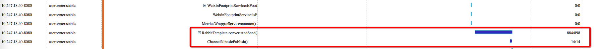
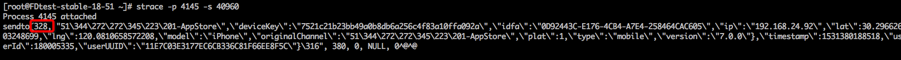
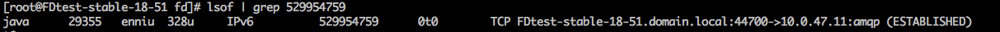

服务A接口异常问题排查
现象
某一时刻T有同学反馈服务A的接口出现异常,无法正常访问.
排查
查看日志出现很多如下的错误.
1 |
|
由异常可知是连接池已满无连接可用。将连接池大小调大后依然会出现问题. 怀疑有泄漏, 添加Hikari的leakDetectionThreshold参数(作用: hikari内部会起一个定时任务检测应用拿走的连接是否在设定的时间内归还，如果没有就认为连接泄漏了).
再出现问题时出现如下的异常.
1 | 2018-07-12 16:03:24.737 WARN 29355 --- [-] [xxDS.housekeeper] com.zaxxer.hikari.pool.ProxyLeakTask : Connection leak detection triggered for com.mysql.jdbc.JDBC4Connection@175635be, stack trace follows |
可以看到AccountController.login方法通过Spring的事务管理器拿到连接后一直未释放. 查看相关代码,如下:
1 | @Transactional |
通过pinpoint观察到rabbit操作较为耗时，怀疑是这里出来问题。

手工发送一个login请求，迟迟没有返回. jstack一把,线程栈如下
1 | "http-nio-8080-exec-27" #663 daemon prio=5 os_prio=0 tid=0x00007fda6c044800 nid=0x1585 waiting for monitor entry [0x00007fda34d55000] |
可以看到http-nio-8080-exec-18拿着锁2在写数据. 正常情况下, http-nio-8080-exec-18 应该很快结束，但是多次jstack都会看到 http-nio-8080-exec-18 处于同样的状态,怀疑写不出去.
整理下逻辑，如果http-nio-8080-exec-18 写不出去会怎样?
1 | 导致锁2未释放 |
是不是真的写不出去?
通过http-nio-8080-exec-18 的nid=0x1031 ,拿到本地进程id 为 4145.
写操作一定会触发系统调用, 使用strace -p 4145 跟踪.

进程一直卡在这里,看起来真的写不出去
向哪儿写,为什么写不出去 ？
通过strace可以拿到当前正在写出的句柄为328.
在通过/proc/ 和 lsof 找出与该句柄关联的socket，如下:

netstat 看下，44700端口上有17376个字节都未收到对端(即10.0.47.11)的ack应答.
1 |
|
10.0.47.11是台rabbit机器,联系相关同学查看10.0.47.11机器的情况,发现rabbit处理极其缓慢
清理掉rabbit的一些队列，数据立刻就发送出去了。相关接口恢复正常.
rabbit内存爆满为什么会影响客户端的发送?
tcp协议中有一个滑动窗口的设定，如果对端缓冲区已满，没有地方接收数据的话，会通知发送端不要在发送数据了。
发送端还会继续写本地buffer,当本地的发送buffer也满了以后，写就被彻底block了. 此时相应的进程会被操作系统换出。 虽然通过jstack 查看发送线程的状态runnable,实时上本地进程的状态已经是S (Interruptible sleep)了.
更多信息,戳这里http://www.mathcs.emory.edu/~cheung/Courses/455/Syllabus/7-transport/flow-control.html
为什么多个线程对rabbit进行操作会相互等待锁?
查看rabbit代码,会发现rabbit是在一个connection上创建了多个Channel,每个http的线程虽然使用了不同的Channel，但这些channel底层实际上是同一个connection. 操作相应流的时加锁就很正常了.
为什么socket不添加一个写超时的选项,写不出去让至少上层知道，而不是偷偷的傻等?
官方建议用NIO,具体看(这里)[https://bugs.java.com/bugdatabase/view_bug.do?bug_id=4031100]
总结
从上述的排查过程至少可以看到几处需要改进的地方.
隔离非核心逻辑,避免因为非核心逻辑的问题造成主逻辑出错.
eg:
login接口中的DB的事务就有些大了，而且其中包括了rabbit这样一个有风险的操作
rabbit及其他中间件客户端需要考虑如何支持写超时
完善网络监控